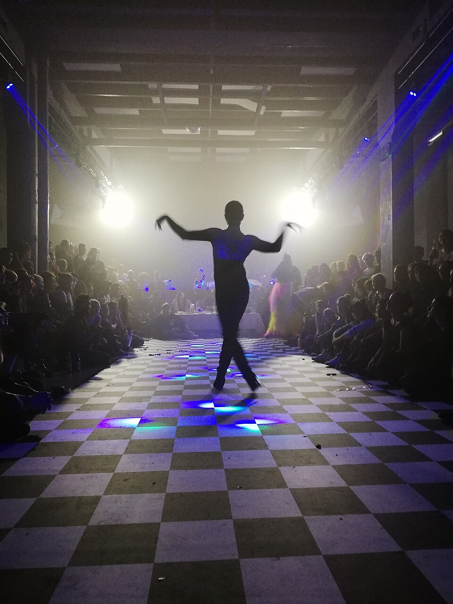
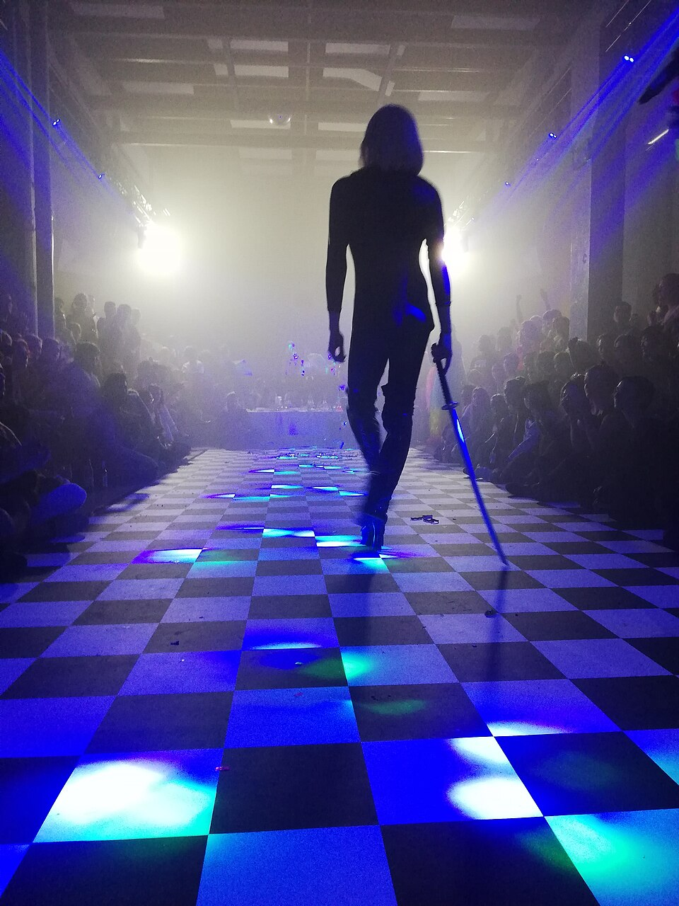
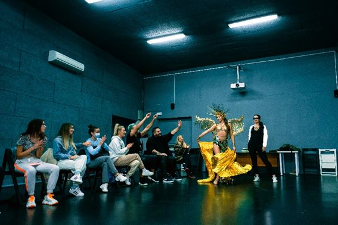

The issue being protested
Ballroom was built by Black and Latino LGBTQ people who needed chosen family when the world refused them. Houses taught safety, real style, and survival. Today fashion and television copy the runway while the people who invented it still face eviction, violence, and laws that attack trans youth and queer gathering spaces. Taking a culture for profit while punishing it in public is not tribute. It is erasure. We protest every policy, platform, and brand that uses our language while shrinking the rooms where we can live. Ballroom is not a costume. It is a community that must be protected.
The floor is still ours



Show up. Credit the houses. Fund the floor.
Share this page. Name the source when you use the language. Defend queer and trans youth. Keep the balls open, local, and in community hands.